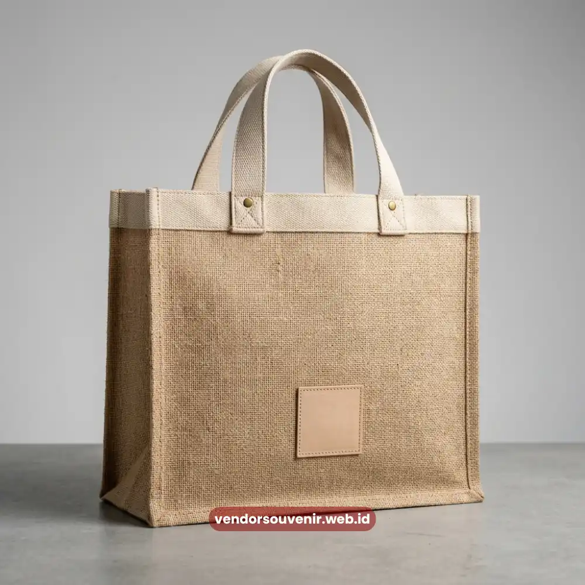

Daftar Isi
Paket ramah lingkungan yang efektif memakai material daur ulang seperti goni, kanvas organik, dan aluminium yang tetap fungsional untuk dipakai sehari-hari, sehingga merchandise perusahaan tidak hanya ramah lingkungan tetapi juga tetap relevan digunakan penerimanya.
- Empat material utama yang umum dipakai untuk paket ramah lingkungan
- Cara mengomunikasikan nilai sustainability lewat desain dan kemasan souvenir
- Perbandingan tas belacu goni dan botol minum aluminium sebagai dua pilihan populer
- Checklist yang perlu dicek sebelum memesan paket eco friendly dalam jumlah besar
Semakin banyak perusahaan yang ingin merchandise mereka mencerminkan komitmen terhadap lingkungan, bukan sekadar formalitas dalam laporan keberlanjutan.
Paket ramah lingkungan menjadi salah satu cara paling terlihat untuk menunjukkan komitmen tersebut, karena langsung diterima dan digunakan oleh klien, mitra, maupun karyawan.
Kenapa Merchandise Ramah Lingkungan Jadi Nilai Tambah Brand
Merchandise ramah lingkungan memberi nilai tambah brand karena penerima dapat langsung melihat dan merasakan komitmen keberlanjutan perusahaan lewat material yang digunakan, bukan hanya membaca klaim di atas kertas.
Ketika sebuah perusahaan memberikan tas belacu goni atau botol aluminium alih-alih plastik sekali pakai, penerima secara langsung mengasosiasikan brand tersebut dengan nilai ramah lingkungan.
Asosiasi ini terbentuk setiap kali produk tersebut dipakai kembali, sehingga dampaknya lebih tahan lama dibanding materi promosi konvensional yang biasanya hanya dilihat sekali lalu disimpan.
Pilihan Material Berkelanjutan yang Tersedia
Material berkelanjutan yang paling umum dipakai untuk paket ramah lingkungan adalah goni daur ulang, kanvas organik, aluminium food grade, dan kertas daur ulang, yang masing-masing punya karakter dan kegunaan berbeda.
Goni Daur Ulang
Goni daur ulang biasanya diolah menjadi tas belacu dengan tekstur alami yang kuat dan tahan lama, cocok untuk kebutuhan tas serba guna.
Kanvas Organik
Kanvas organik lebih sering digunakan untuk tote bag dengan permukaan yang lebih halus dan mudah dicetak logo.
Pembahasan bahan tas untuk kebutuhan branding korporat dapat dibaca pada artikel Bahan Tas Seminar Kit Custom.
Aluminium Food Grade
Aluminium food grade dipakai pada botol minum karena aman untuk kontak makanan dan minuman, sekaligus lebih mudah didaur ulang dibanding plastik.
Kertas Daur Ulang
Kertas daur ulang digunakan pada notebook, kemasan, atau kartu ucapan yang menyertai paket souvenir.
Cara Mengomunikasikan Nilai Sustainability lewat Souvenir
Nilai sustainability dapat dikomunikasikan lewat souvenir dengan mencantumkan informasi singkat mengenai asal material, sertifikasi ramah lingkungan bila tersedia, dan penggunaan cetak water based ink pada logo perusahaan.
Penjelasan singkat pada label kemasan, misalnya mengenai persentase material daur ulang yang digunakan, membantu penerima memahami bahwa produk tersebut memang dirancang dengan pertimbangan lingkungan, bukan sekadar klaim tanpa bukti.
Penggunaan tinta cetak berbasis air pada logo juga menjadi detail yang memperkuat konsistensi nilai keberlanjutan pada keseluruhan produk.
Ide kemasan yang ikut memperkuat citra brand dapat disimak pada artikel Kemasan Hampers Kantor Eksklusif.

Tas Belacu Goni Korporat Premium Berbahan Daur Ulang
Perbandingan Tas Belacu Goni dan Botol Aluminium
Tas belacu goni dan botol aluminium adalah dua pilihan populer dalam paket ramah lingkungan, dengan tas belacu lebih cocok untuk kebutuhan serba guna dan botol aluminium lebih cocok untuk kebutuhan hidrasi harian karyawan atau peserta acara.
Tas Belacu Goni untuk Kebutuhan Serba Guna
Tas belacu goni umumnya dipilih ketika perusahaan ingin memberikan item yang bisa dipakai untuk berbagai keperluan, seperti membawa dokumen, laptop, atau barang belanja.
Botol Aluminium untuk Hidrasi Harian
Botol aluminium lebih relevan untuk mendukung kebiasaan minum air yang lebih sehat sekaligus mengurangi penggunaan botol plastik sekali pakai.
Memadukan Keduanya dalam Satu Paket
Kedua produk ini dapat dipadukan dalam satu paket agar nilai fungsional dan pesan keberlanjutan sama-sama tersampaikan.
Checklist Sebelum Memesan Paket Eco Friendly
Sebelum memesan paket eco friendly dalam jumlah besar, sebaiknya perusahaan memastikan ketersediaan sertifikasi material, kualitas cetak logo, dan kesesuaian jumlah pesanan dengan kapasitas produksi vendor.
Sertifikasi Material
Pemeriksaan sertifikasi material membantu memastikan klaim ramah lingkungan pada produk memang dapat dipertanggungjawabkan.
Kualitas Cetak Logo
Kualitas cetak logo, termasuk jenis tinta yang digunakan, sebaiknya dikonfirmasi lebih dulu agar hasil akhir konsisten dengan identitas brand.
Kapasitas Produksi Vendor
Kesesuaian jumlah pesanan dengan kapasitas produksi vendor juga penting agar timeline pengiriman tetap sesuai kebutuhan acara atau program apresiasi perusahaan.

Pilihan Souvenir Korporat Premium dari Vendor Terpercaya
Kesimpulan
Paket ramah lingkungan yang efektif memadukan material daur ulang yang tetap fungsional, komunikasi nilai sustainability yang jelas, dan pemeriksaan vendor yang teliti sebelum pemesanan dalam jumlah besar.
Tas belacu goni dan botol aluminium dapat menjadi kombinasi awal yang tepat karena keduanya dipakai penerima dalam aktivitas sehari-hari.
Pilihan produk yang siap dipesan tersedia pada kategori Souvenir Ramah Lingkungan dan halaman Paket Ramah Lingkungan.
Siap Menyusun Paket Ramah Lingkungan?
Kami siap membantu menyiapkan paket ramah lingkungan terbaik sesuai kebutuhan dan anggaran perusahaan Anda.
Konsultasikan pilihan material, custom logo, dan jadwal pengiriman Anda sekarang juga.
Dapatkan penawaran harga terbaik!
Maroon Souvenir
Partner Corporate Gift terpercaya di Indonesia. Berpengalaman melayani ratusan perusahaan sejak 2018.
Lihat Portofolio Kami